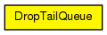
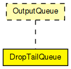

Drop-tail queue, to be used in network interfaces. Conforms to the OutputQueue interface.
The following diagram shows usage relationships between types. Unresolved types are missing from the diagram.
The following diagram shows inheritance relationships for this type. Unresolved types are missing from the diagram.
| Name | Type | Default value | Description |
|---|---|---|---|
| frameCapacity | int | 100 |
| Name | Value | Description |
|---|---|---|
| display | i=block/queue |
| Name | Direction | Size | Description |
|---|---|---|---|
| in | input | ||
| out | output |
// // Drop-tail queue, to be used in network interfaces. // Conforms to the OutputQueue interface. // simple DropTailQueue like OutputQueue { parameters: int frameCapacity = default(100); @display("i=block/queue"); gates: input in; output out; }